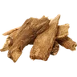
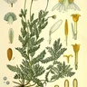

Correspondence Grimoire
Anti-Spasmodic
Type
Oils64

Costus Essential Oil
Roman Chamomile Essential OilAntispasmodic: prevents and eases spasms or convulsions.
Correspondence Grimoire

Costus Essential Oil
Roman Chamomile Essential OilAntispasmodic: prevents and eases spasms or convulsions.